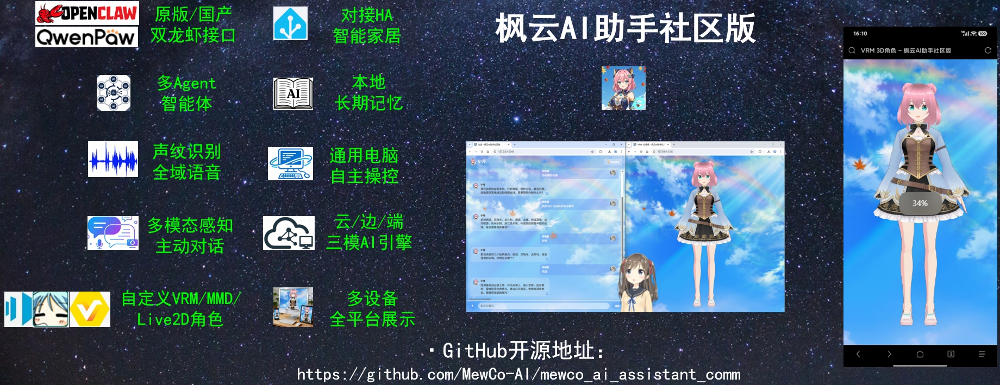

枫云AI助手社区版

高自由度网页 / 桌面二次元 2D/3D 全能 AI 助手。多设备全平台通过浏览器使用，集成主动感知对话、多模态图像识别、Live2D 桌宠与通用电脑自主操控。
首款硬件生态产品，把完整的 AI 座舱系统装进迷你形态，带到桌面、家中与车内。

一台小车，一套完整的座舱系统。可以被拆开、被理解、被重新定义。代码、文档与配置一起交付，有浏览器的地方就是它的屏幕。桌面、家中、车内，同一套系统换一个场景继续用。
两款开源免费的二次元 AI 助手，分别面向 Windows 桌面与 Linux 极客硬件。核心能力一脉相承，选择取决于你的设备与使用习惯。
社区版面向 Windows 桌面与全平台浏览器访问，Linux 版面向极客硬件与局域网场景。核心能力一脉相承，选择取决于你的设备与使用习惯。
| 功能特性 | 社区版 v4.2 （Windows） | Linux 版 v4.3 （Linux） |
|---|---|---|
| 项目定位 | 高自由度全能型网页 / 桌面二次元 AI 助手 | 专为 Linux 极客打造的二次元 AI 助手 |
| 适用人群 | To C（大众用户） | To D（开发者） |
| 入门难度 | 中低，有一键整合包 | 高，需要熟悉 Linux 系统和 Python 编程 |
| 支持平台 | Windows 10/11 x86_64 | Linux ARM64 / Linux x86_64 |
| 软件架构 | Web 服务 + Qt 桌面宠物 + 悬浮球 | 纯 Web 服务端，无桌面 GUI |
| 超级智能体接口 | OpenClaw / QwenPaw(MQTT) | OpenClaw / QwenPaw / Hermes Agent |
| 适用场景 | 个人桌面 PC / 笔记本 | 本地服务器 / 开发板 |
| 专注 / 放松模式 | 暂不支持，后续新版将支持 | 支持，空间音效沉浸全景声 |
| DIY 二次开发 | 支持，自由修改源代码 | |
| 本地部署 | 全系支持完全本地 / 局域网私有化部署，隐私不外露 | |
| 费用及范围 | 项目组秉持科技平权的理念，推动 AI 技术普惠，全系产品开源免费无内购。不可商用，仅供个人使用 | |
从第一次启动到深入源码，从本地推理到智能家居接入，配套资源会随着版本持续更新。
从弦月小车到枫云 AI 助手，所有项目开源免费。欢迎 Star、试用、反馈，或加入社区，一起把热爱变成真正好用的产品。